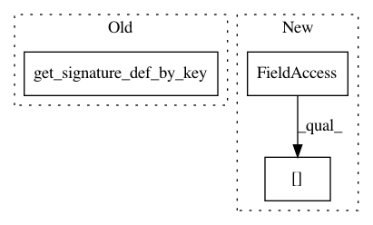

3af34da4ee2eace1ea81461e87557a493778c3c8,tensorflowonspark/pipeline.py,,_run_model,#Any#Any#Any#,483
Before Change
assert args.export_dir, "Inferencing with signature_def_key requires --export_dir argument"
logging.info("===== loading meta_graph_def for tag_set ({0}) from saved_model: {1}".format(args.tag_set, args.export_dir))
meta_graph_def = get_meta_graph_def(args.export_dir, args.tag_set)
signature = signature_def_utils.get_signature_def_by_key(meta_graph_def, args.signature_def_key)
logging.debug("signature: {}".format(signature))
inputs_tensor_info = signature.inputs
logging.debug("inputs_tensor_info: {0}".format(inputs_tensor_info))
outputs_tensor_info = signature.outputs
After Change
assert args.export_dir, "Inferencing with signature_def_key requires --export_dir argument"
logging.info("===== loading meta_graph_def for tag_set ({0}) from saved_model: {1}".format(args.tag_set, args.export_dir))
meta_graph_def = get_meta_graph_def(args.export_dir, args.tag_set)
signature = meta_graph_def.signature_def[args.signature_def_key]
logging.debug("signature: {}".format(signature))
inputs_tensor_info = signature.inputs
logging.debug("inputs_tensor_info: {0}".format(inputs_tensor_info))
outputs_tensor_info = signature.outputs
In pattern: SUPERPATTERN
Frequency: 4
Non-data size: 3
Instances
Project Name: yahoo/TensorFlowOnSpark
Commit Name: 3af34da4ee2eace1ea81461e87557a493778c3c8
Time: 2018-11-09
Author: avihayt@kenshoo.com
File Name: tensorflowonspark/pipeline.py
Class Name:
Method Name: _run_model
Project Name: mlflow/mlflow
Commit Name: 9bd0e03c6d66a8e84d1d9196eb601c1e4738d01b
Time: 2018-11-07
Author: smurching@gmail.com
File Name: mlflow/tensorflow.py
Class Name:
Method Name: _load_model
Project Name: yahoo/TensorFlowOnSpark
Commit Name: 99fd651b7ffc5c977ffb0dac1c254ac42bdbccb5
Time: 2018-11-09
Author: leewyang@gmail.com
File Name: tensorflowonspark/pipeline.py
Class Name:
Method Name: _run_model
Project Name: databricks/spark-deep-learning
Commit Name: b597a2cb47d41ced8b2313178b4ae1c404181c30
Time: 2018-11-17
Author: meng@databricks.com
File Name: python/sparkdl/graph/input.py
Class Name:
Method Name: _from_saved_model_impl